Data Integration Framework
Designing a scalable, extensible data integration ecosystem to bring external and internal data.
Product Design Leadership
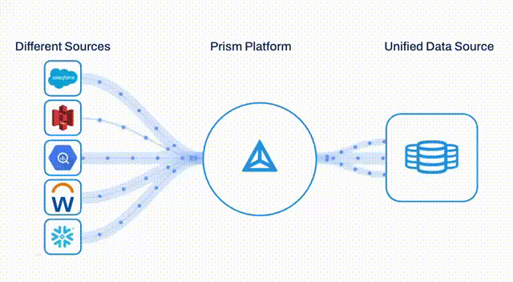
Context and Problem
Customers had data everywhere. Prism could only see some of it.
Workday Prism Analytics is a powerful platform for financial and HR reporting — but its value depends on the richness of the data it can access. Organizations were storing critical data in cloud warehouses, SaaS platforms, and legacy file systems that Prism had no native pathway to reach.
The result: customers were forced to build custom ETL pipelines or rely on brittle Studio integrations to get external data into Prism. This created maintenance burden, slowed time-to-insight, and limited adoption among data-forward customers.
Data Integration Journey
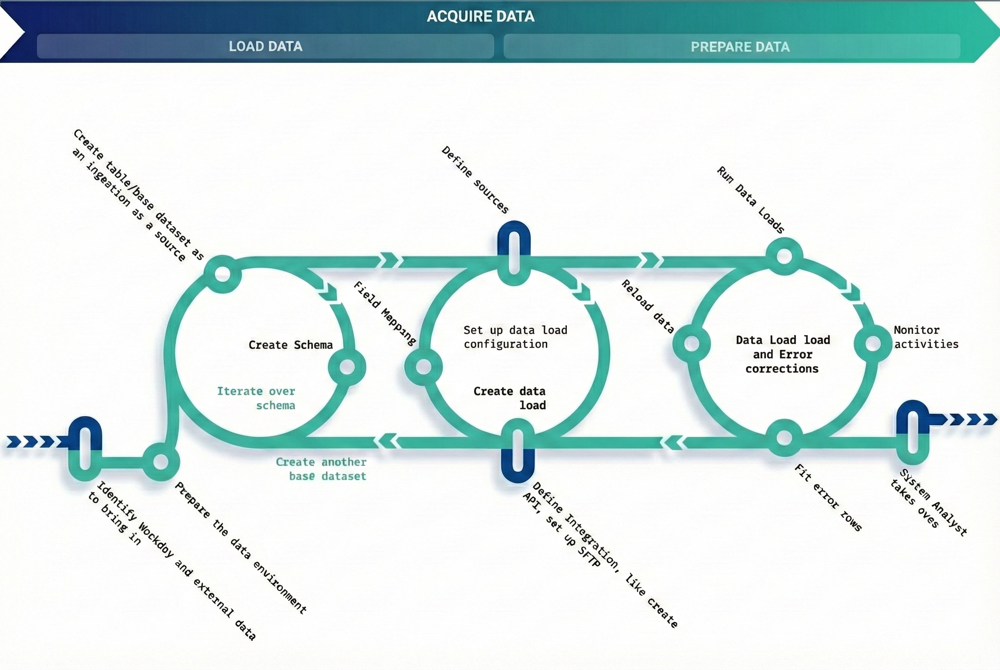
End-to-end data integration journey: From identifying data sources to monitoring activities
Goals
Existing data integration framework lacked flexibility, transparency and had performance issues. Customers were bringing in high volume and high frequency data which demanded a revamp of the current architecture for data containers.
Our goal was to design the end-to-end experience for a self service data integration framework that will enhance data management capabilities by providing:
Complete Data Transparency
Full visibility into data flows and transformations
Data Validation
Robust validation to ensure data quality and integrity
Powerful Schema Management
Flexible schema handling for diverse data sources
Fine-Grained Access Control
Granular permissions and security at every level
Comprehensive Monitoring
Real-time visibility into integration health and status
Design Approach
A framework, not just features.
Rather than designing one-off connector flows, I advocated for a unified Data Integration Framework — a shared UX model, connection management system, and design pattern library that could scale across dozens of future connectors without bespoke design each time.
This meant working upstream with engineering to define the DCT (Data Change Task) framework as a reusable scaffold, and establishing UX conventions for credential management, connection testing, field mapping, and error states that would apply across every connector type.
Key Design Decisions
Principles that shaped the framework.
Every pattern — credential forms, connection testing, error messaging — was designed as a reusable component, not a one-off. This cut design time for Phase 4's four connectors significantly.
Credential handling, OAuth flows, and IAM configuration were designed in parallel with security review ensuring secure patterns were user-friendly — not bolted on.
Design scales from 6 to 10+ connectors without visual degradation, groups related connectors by type, and uses familiar platform iconography to reduce cognitive load.
System Thinking: Object Modelling
By focusing on Object-Oriented UX (OOUX) principles, we shift the conversation away from individual screens and toward a shared understanding of core objects, their attributes, and their complex interdependencies. This approach is inherently superior because it establishes consistent patterns and logical relationships early in the process, preventing the "drift" that often occurs when designers focus on aesthetics while engineers focus on data structures. Ultimately, this systemic alignment reduces technical debt and ensures that the final product is as intuitive to navigate as it is robust to build.
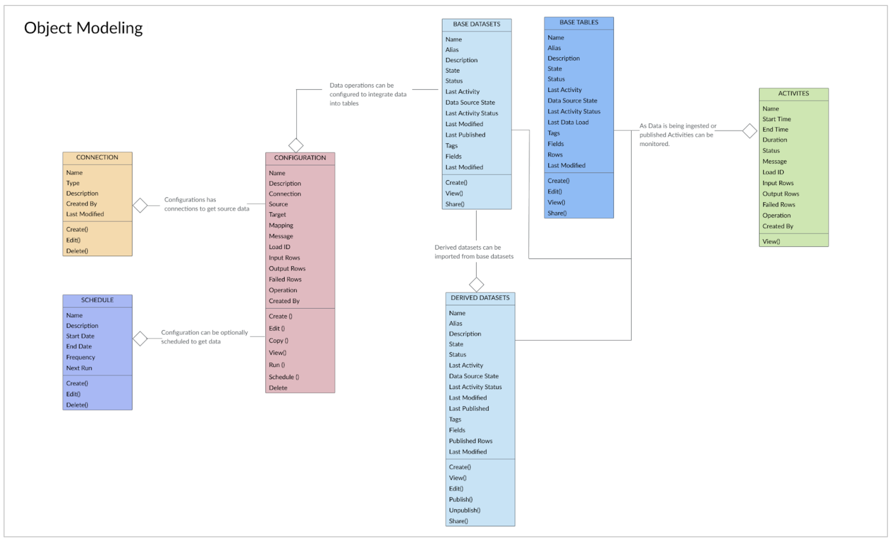
Object Modeling Diagram: System view showing how the new connection object interacts with other catalog objects — click to enlarge
My Role
UX Strategy & Design Leadership
- Led UX efforts in defining the strategy and roadmap for data integration experience
- After Phase 1 launch, transitioned into management
- Hired and trained designers to work on subsequent phases of the roadmap
- Team co-led several customer workshops along with research team
- Provided design deliverables and worked with the scrum team until final launch
Design Process
MVP - Phase 1
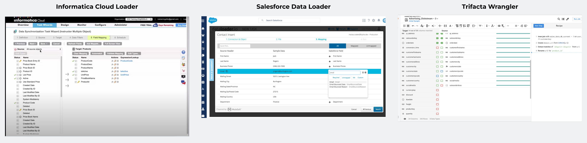
Competitive landscape analysis of data integration platforms
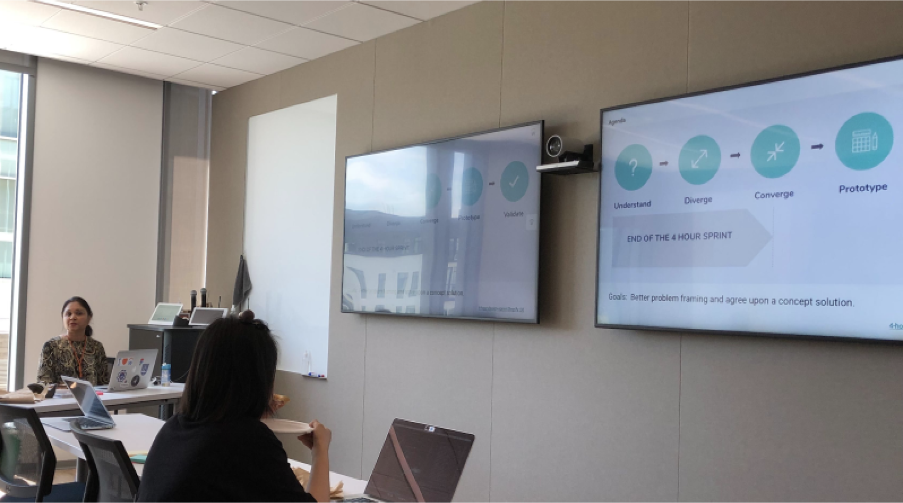
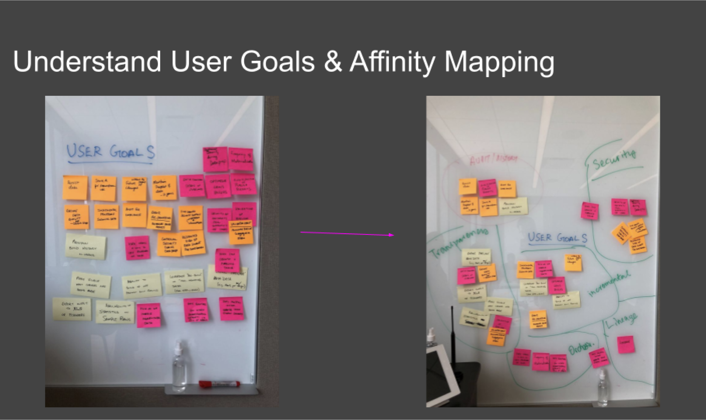
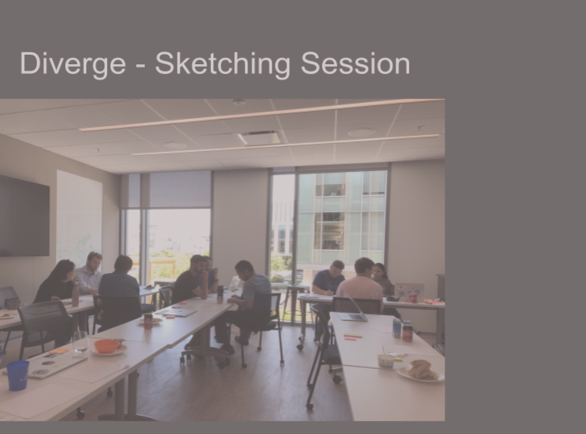
Cross-functional design sprint workshops with stakeholders
Concept walkthrough demonstrating the self-service data integration flow
Tables are foundational data containers that serve as a central location for data from multiple sources with schema definition and data management capabilities.
Provide the flexibility to ingest data incrementally in an automated fashion with a reusable framework for Table Data Change operations such as Append, Replace, Delete. Define and map fields that are needed.
Create reusable connections and activity monitoring, integrating with the data catalog.
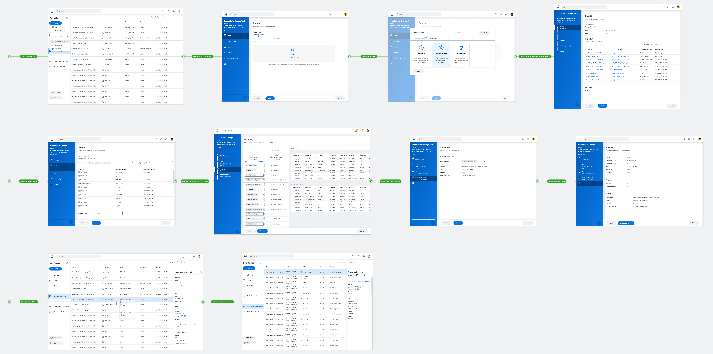
Data Change Task: Complete stepper workflow overview — click to enlarge
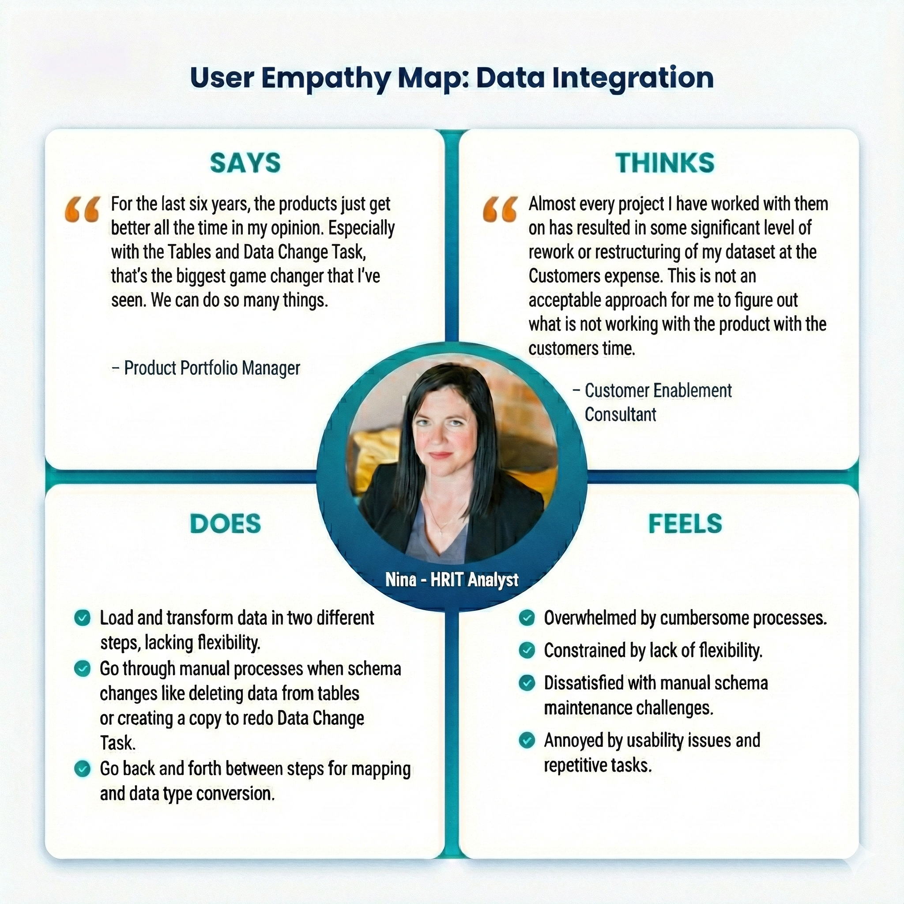
User Empathy Map: Understanding the HRIT Analyst persona and their pain points
Design Improvements
Key UX optimizations driven by user feedback, focusing on workflow efficiency, cognitive load reduction, and system coherence.
Unified Mapping, Data Types & Smart Suggestions
- Mapping fields and converting data types were two separate steps
- Users had to move back and forth between screens
- Auto-mapping algorithm created duplicate mappings due to hierarchical naming
- Data preview panel consumed valuable mapping space
- No intelligent assistance for mapping decisions
- Combined mapping + data type conversion into a single unified workflow
- Switched from fuzzy hierarchical to exact mapping logic
- Added ML-powered field mapping recommendations with confidence scores
- Moved data preview to expandable bottom panel
- Expanded mapping workspace for better visibility
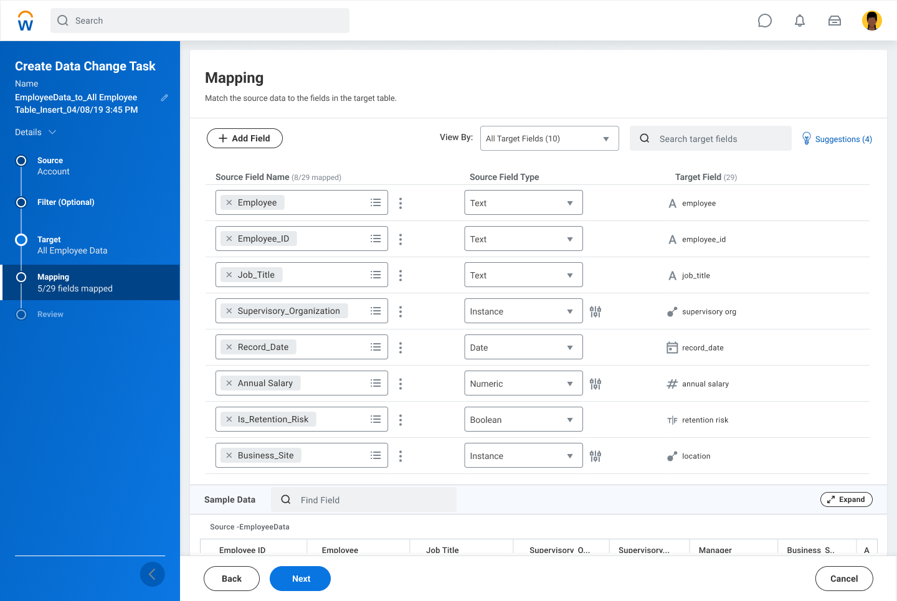

Schema Changes with Existing Data
- Manual, multi-step workaround required for schema changes
- Deleting or modifying fields required recreating tables
- High operational friction and risk of data inconsistencies
- Introduced Alter Table capability
- Users can modify table schema even when data exists
- Eliminated manual workaround processes
- Reduced engineering dependency
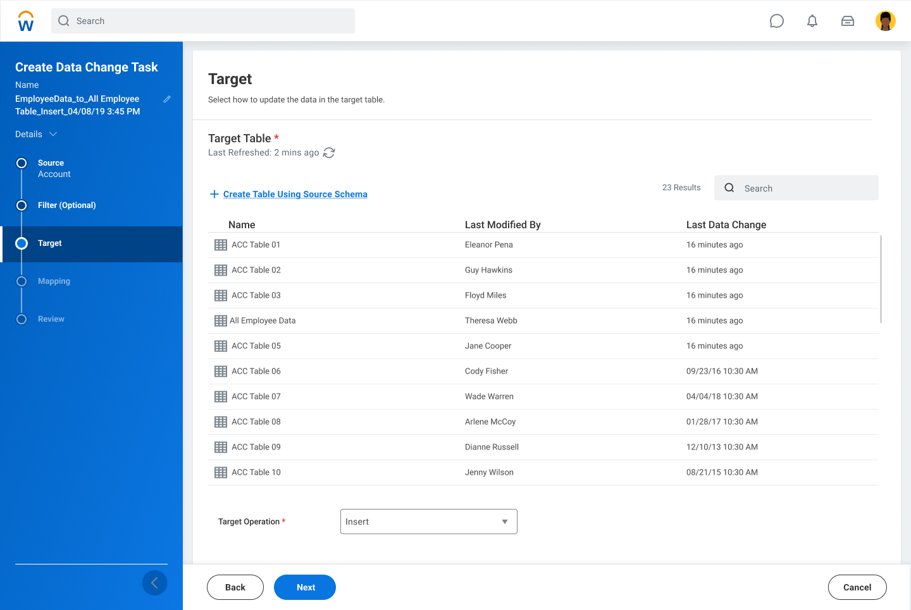
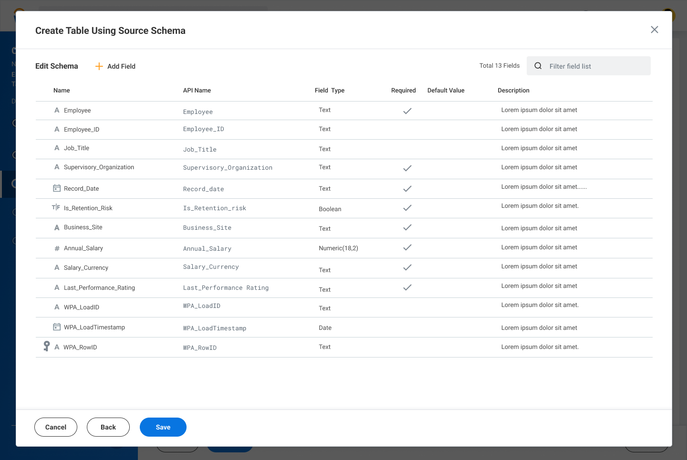
Load & Transform Workflow
- Loading data and transforming data were completely separate stages
- Transformations required moving to a different step
- No lightweight manipulation during load stage
- Enabled lightweight transformations during load (filters, custom calculations)
- Users can perform quick data shaping inline
- Reduced need for separate transformation passes
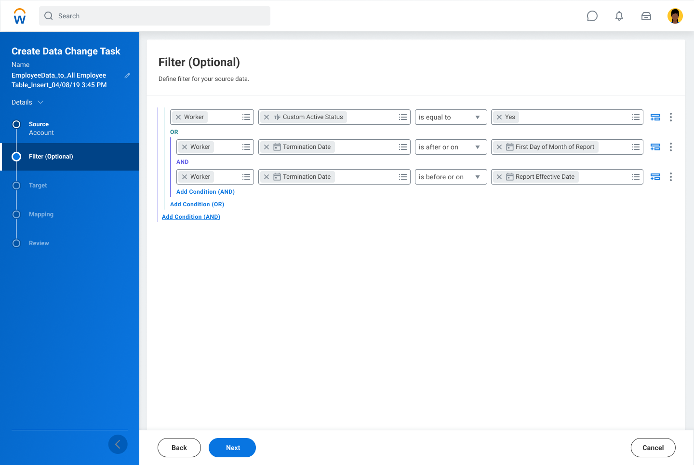
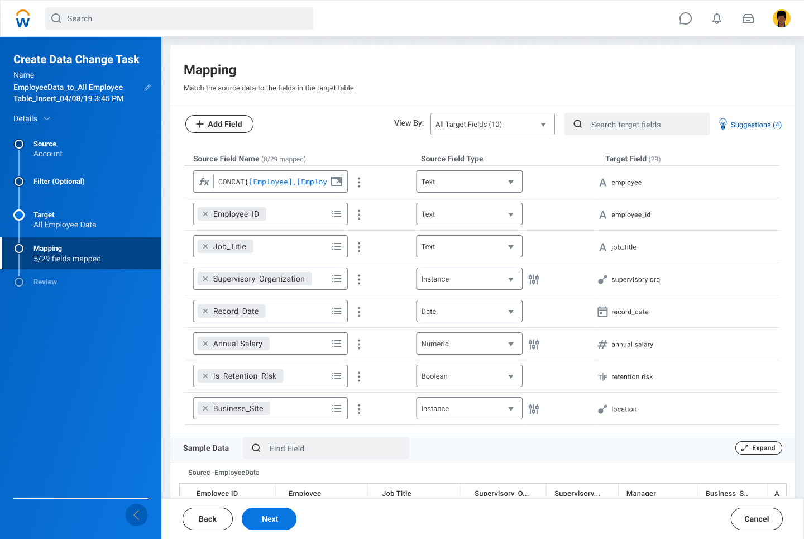
Connector Selection & Configuration
- Fragmented connector setup across different interfaces
- Inconsistent credential and authentication flows
- No logical grouping of connector types
- Each connector required bespoke design work
- Unified tile grid with consistent selection experience
- Logical grouping by type: Workday Delivered, Applications, Data Warehouses
- Familiar platform iconography reduces cognitive load
- Framework scales from 6 to 10+ connectors without redesign
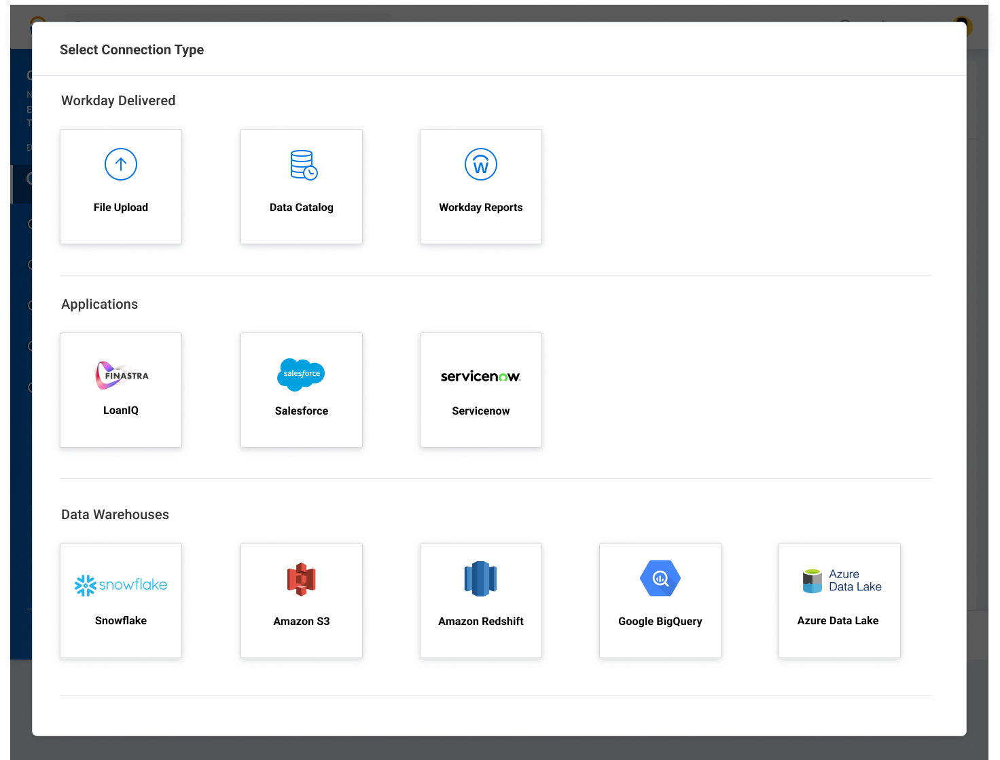
Phased Delivery
Building the ecosystem incrementally.
The connector roadmap was structured in phases tied to release milestones, each expanding the surface area while validating the framework's extensibility. Each phase introduced new connector types — from internal Workday data, to file-based, to direct cloud warehouse connectivity.
Internal Connectors — DCT Framework, File-Based & Data Catalog
Established the core DCT architecture and connection management patterns. Introduced the first connectors: internal Workday data flows, file upload ingestion (CSV/Excel), and native Data Catalog integration. Proved the framework could handle diverse connector types from day one.
Workday Reports & SFTP
Extended the framework to pull from native Workday Reports (addressing a top enterprise request) and SFTP file servers — a widely used legacy data pathway for regulated industries. Validated credential management flows and secure connection testing UX.
Salesforce & Amazon S3
Introduced the first external SaaS and cloud storage connectors. Salesforce addressed the most-requested CRM data source; S3 opened the door to data lake access. Security reviews completed for both new OAuth and IAM credential patterns.
Cloud Data Warehouse Suite
The most ambitious phase — four major cloud data warehouses in a single release cycle. Designs completed and partnered directly with engineering for implementation. Each connector used the mature framework with tailored authentication flows (key-pair for Snowflake, service account for BigQuery, IAM for Redshift, Azure AD for Synapse).
Impact & Outcomes
A platform, not just a product.
The Data Integration Framework transformed Prism from a closed analytics environment into an open, extensible data platform. Customers gained self-serve access to their most critical data sources without engineering intervention.